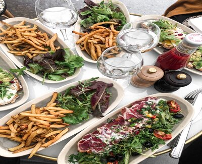

Bienvenue to Cultural Insights
What is French Culture?
French culture is an intricate tapestry woven from centuries of history, art, cuisine, language, and a distinctive way of life. Renowned globally for its elegance, sophistication, and rich heritage, French culture is a reflection of its diverse regions and multifaceted influences. At its core, French culture celebrates a deep appreciation for the arts. From the majestic masterpieces exhibited in the Louvre to the captivating performances at the Opéra Garnier, art and creativity are deeply embedded in the French identity. France's literary contributions, from the works of Voltaire and Victor Hugo to contemporary writers, showcase a reverence for language and storytelling. Cuisine is an art form in itself within French culture. From the delicate flavors of a croissant at a corner patisserie to the refined techniques of haute cuisine, French gastronomy is revered worldwide. Meals are an experience to be savored, emphasizing quality ingredients and a leisurely approach to dining that underscores the importance of enjoying good food in good company.
The French take pride in their joie de vivre—a love for life that encompasses leisure, fashion, and the enjoyment of everyday moments. The café culture, with its sidewalk terraces, encourages social interaction over espresso or a glass of wine. Fashion and style hold a prominent place, with Paris serving as a global hub for haute couture and setting trends that influence the world of fashion. Cultural heritage is deeply cherished in France, evident in its historic landmarks and traditions. The country's architectural marvels, such as the Notre-Dame Cathedral and the Palace of Versailles, stand as testaments to its rich history. Festivals, from Mardi Gras to Bastille Day celebrations, bring communities together, celebrating traditions that have been passed down through generations. Moreover, French culture values intellectual discourse, innovation, and education, fostering an environment that encourages critical thinking and creativity across various fields.
French Traditions and Culture
Language
Language holds a central place within French tradition and culture. Deeply rooted in the country's history, the French language is far more than a mere means of communication; it embodies the very essence of French cultural identity.
French Values
The French motto “Liberty, Equality, and Fraternity” reflects the values of French society. Equality and unity are important to the French. The French also value style and sophistication, and they take pride in the beauty and artistry of their country. These values have evolved over centuries and continue to shape French society, guiding its policies, laws, and societal norms. They stand as a testament to France's commitment to freedom, equality, solidarity, and the pursuit of a fair and inclusive society.
French Cuisine
French cuisine, a cornerstone of the nation's identity, is revered globally for its refinement and culinary artistry. It embodies a rich tapestry of regional diversity, each area offering unique flavors and specialties, from the robust stews of Burgundy to the delicate pastries of Paris. At its core, French cooking emphasizes the use of high-quality, fresh ingredients, sourced locally and meticulously prepared. This commitment to quality, paired with the mastery of techniques, distinguishes French gastronomy. French chefs are renowned for their culinary expertise, honed through rigorous training and a dedication to precision. Their artistry extends to the presentation of dishes, elevating each meal into an experience that delights the senses.Moreover, French cuisine's influence extends globally, shaping and inspiring culinary practices worldwide. Its techniques, chefs, and culinary literature have left an indelible mark on the world's gastronomic landscape, perpetuating its reputation for excellence.
French Fashion
French fashion is an embodiment of elegance, sophistication, and a distinctive sense of style that has long been revered as a trendsetter on the global stage. Rooted in a rich cultural heritage and a tradition of craftsmanship, French fashion continues to set benchmarks in the industry. At the heart of French fashion lies Paris, the fashion capital renowned for its haute couture houses, iconic designers, and prestigious fashion events like Paris Fashion Week. The city serves as a melting pot of creativity, where innovation meets tradition in the realm of clothing and design. French fashion is characterized by its attention to detail, impeccable tailoring, and emphasis on quality materials. Whether it's the timeless allure of a Chanel suit, the artistic creations of Dior, or the avant-garde designs of Balmain, French fashion houses are known for their craftsmanship and commitment to luxury. Moreover, French style is not confined to high fashion; it permeates everyday life. Effortless chicness, a sense of understated elegance, and a focus on quality over quantity define the French approach to dressing. The ability to effortlessly mix classic pieces with modern trends while exuding confidence remains a hallmark of French style. Parisian women, in particular, are celebrated for their sartorial choices, effortlessly blending classic pieces with a hint of edginess. Their style is often characterized by a capsule wardrobe of versatile essentials that exude sophistication and timelessness. Furthermore, French fashion extends beyond clothing to include accessories, perfumes, and cosmetics. French brands like Louis Vuitton, Hermès, and L'Oréal are esteemed globally for their craftsmanship, innovation, and ability to create enduring luxury products.